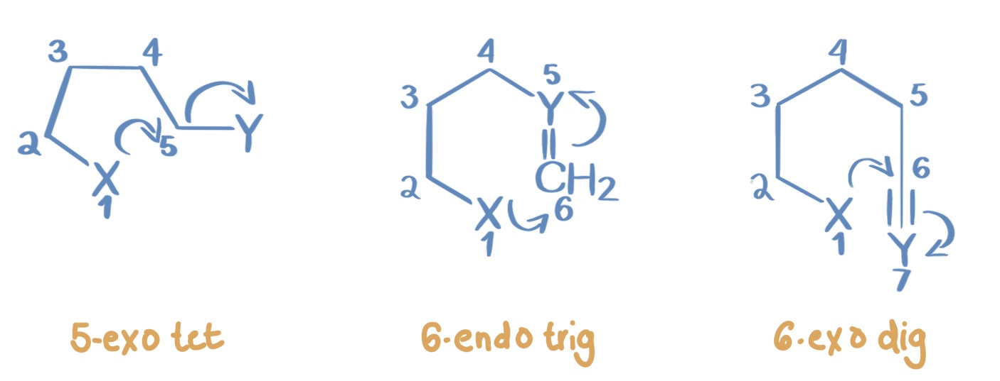

What are Baldwin's Rules

Baldwin’s rules for ring closure are used in organic chemistry to predict intramolecular ring forming reactions. The rules allow chemists to predict ring forming reactions during a synthesis. The rules are often used to design a synthesis that is geometrically allowed.
The rules serve as a way to predict ring closure taking into account ring, geometrical bonds, and the reacting carbon.
These rules have been very influential in the field of pharmaceuticals, the methods used to predict geometrical bonds have helped scientists invent new pharmaceuticals through a synthesis. The rules allow them to get a more clear understanding of how the carbon atoms are going to react.